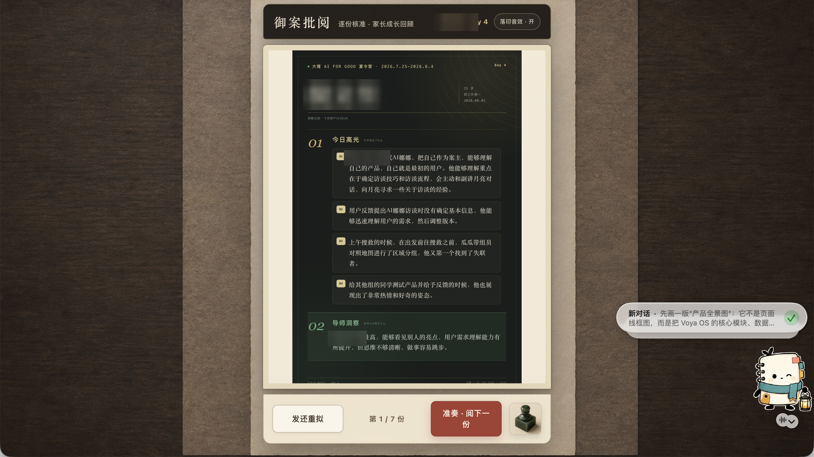
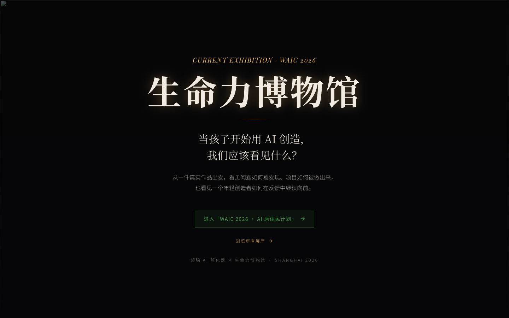
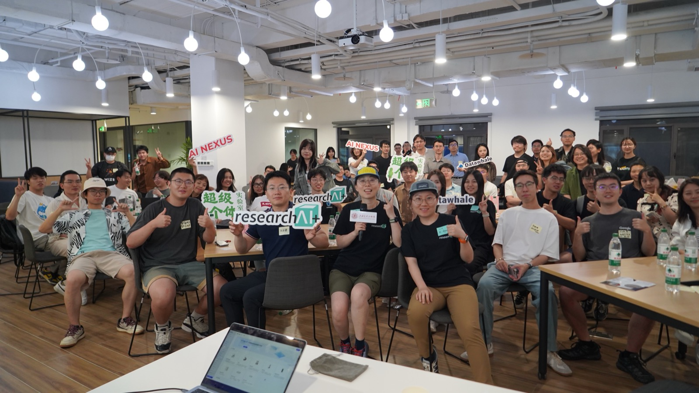
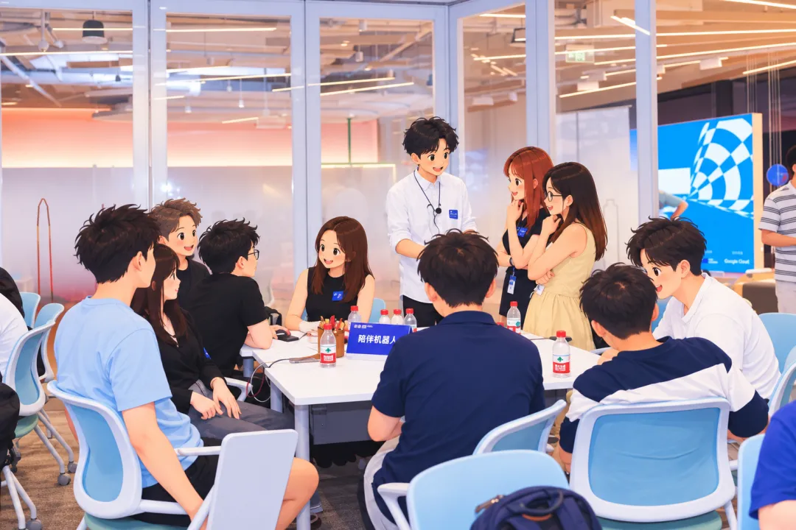

进入真实使用场景
从老师的日常记录需求出发，做出观察记录编辑器，并在七天教学中试用与调整。
用户洞察与迭代 ↓Application portfolio / October 2026
Community Programs & Insights Manager
张婵媛（月亮） · Voya
我从人类学田野走进 AI 创造者与开发者社区，搭建项目、倾听使用者，并将现场需求转化为工具、内容与协作机制。现在，我希望在 Manus 把这条路径延伸到产品：帮助用户完成真实任务，跟进反馈，为项目结果负责。
中山大学 · 人类学硕士（2025） / 用户研究 · 社区项目 · AI 实践
01 / Evidence at a glance
从具体项目看我做过什么、承担什么，以及这些经验如何迁移到 Manus。
从老师的日常记录需求出发，做出观察记录编辑器，并在七天教学中试用与调整。
用户洞察与迭代 ↓超级个体实验室的冷启动与持续连接；蓝驰 Hub 的跨团队筹备、现场执行与会后沉淀。
项目运营证据 ↓已有工具试用与反馈迭代实践；进一步提出产品团队可协作、用户可追踪的反馈机制。
已有实践与工作设想 ↓用 Manus 搭建生命力博物馆，将人物档案变成线上展馆，并带到线下大会现场展示。
Manus 产品实践 ↓02 / Real tasks, real users
我关心的不只是一个工具能生成什么，而是使用者能否把它放进自己的工作。
老师需要记录学生的日常状态，并向家长提供具体、可信的反馈。信息整理可以被辅助，教育判断需要由老师掌握。
目前呈现定性实践与使用过程，不据此声称已量化提升效率、学习效果或留存。

我用 Manus 搭建生命力博物馆，把分散的人物故事与项目材料，组织成可以持续访问的叙事空间，并加入教育板块的共创功能。
线下展示是实践记录；尚未将其表述为产品增长、付费转化或持续活跃的验证。

03 / Programs & community
把成员发现、项目组织与内容沉淀放在同一条路径上，支持社区中的人继续行动。
作为项目发起人，我搭建社区与内容体系，在 100 多天里将对年轻 AI Native 创造者的观察，转化为 400 多人的社群。
项目规模来自既有作品集记录；不将成员总数等同于活跃率、留存率或产品使用结果。

在 AI × 硬件闭门交流中，我协调市场、投资团队与深圳在地创业者网络，统筹筹备、现场执行和会后内容沉淀。

COMMUNITY CONTENT & STORYTELLING
在「观猹人物」系列中，通过深访记录早期 AI 创造者如何做产品与验证想法。4 期公开人物稿累计阅读 8000+；默子稿发布后产生 20+ 次资源沟通。这些是内容与连接结果。
阅读 Redink 创造者故事 ↗REUSABLE AI WORKFLOWS
把录音、截图与旧稿纳入任务分诊、结构重组、起草、事实核对和发布复盘流程。AI 辅助处理资料，我负责判断、语境核对与编辑。
查看内容创作工作流 ↗04 / How I would work at Manus
以下是基于已有实践提出的工作设想，不是已在 Manus 或其他产品团队执行的成绩。
01 / CAPTURE & CLARIFY
先确认用户想完成什么、卡在哪一步、已经尝试什么。区分 bug、产品建议、学习需求与高价值用例；保留复现条件与必要材料。
02 / PRIORITIZE & OWN
按任务影响、重复频次和现有替代路径判断优先级。与内部团队确认负责人、下一步和反馈时间；对尚待确认的信息明确标记。
03 / FOLLOW THROUGH
跟踪处理状态，将进度、解决方式或暂不处理的原因反馈给用户。反复出现的障碍进入教程、office hours 或可复用案例，再观察任务是否完成。
用户目标 · 使用场景 · 阻塞步骤 · 复现材料 · 问题类型 · 影响与频次 · 负责人 · 下一步 · 下次更新 · 最终结果 · 用户回访
05 / A starting point, not a promise
先理解现有 Fellow 项目与产品团队的协作方式，再用一个小范围试点验证支持机制。
UNDERSTAND
访谈 Fellows 与内部协作方，梳理招募、入门、任务支持与退出流程，明确项目目标和用户最常卡住的环节。
PILOT
围绕一个反复出现的真实任务，组织小范围 workshop 或 office hours，建立反馈记录，并跟进用户能否独立完成任务。
REVIEW
同时看参与、产出质量、任务完成与反馈进展。将有效方法整理成双语案例与支持资源，再决定如何扩展。
经验迁移的边界：已有案例主要来自中国的线下与线上创造者社区；我尚未独立负责全球 Discord 社区或完整的全球 Fellow 生命周期。进入岗位后，需要结合既有规则与团队经验补齐跨时区支持、线上治理、评估及退出机制。
IN MY OWN WORDS
I am an anthropology-trained researcher and community builder who works with AI creators and developers. I built the Vitality Museum with Manus and brought the project into public exhibition settings. At Manus, I want to help users complete real tasks, turn community signals into actionable feedback, and follow through with both users and internal teams.
本页依据 Manus 官方 Community Programs & Insights Manager JD 定制，重点对应社区项目、用户洞察与反馈、用户赋能、内容和评估。案例采用既有作品集与本人项目记录；“如何在 Manus 工作”部分为申请设想。历史累计规模不表示当前规模。
查看官方岗位 JD ↗